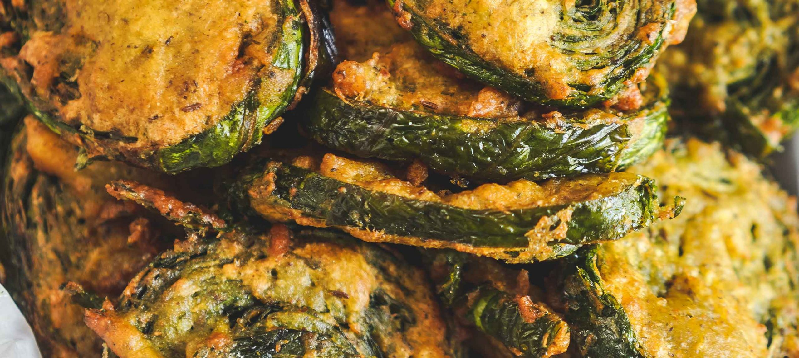

Saheena

Description
Saheena is an indian food which found
a new home in its voyage
to trinidad and tobago.
The Vegan delight warms you with a oil slicked
crispy golden crunch followed by a secretion of
earthly green juices spiralled with punchy spices
of the native land.
Ingredients
- 2 cups Flour
- 1 cup ground Split Peas
- 1 lb chopped Spinach
- 1 tbs Instant Yeast
- 1 tsp Himalayan Salt
- 2 tbs minced Garlic
- 2 tbs minced Bandhania
- 1 tsp Roasted Ground Cumin Geera
- 1 Scotch Bonnet Pepper
- 1/2 tsp Tumeric
- 1 cup lukewarm Water
- Vegetable oil for Frying